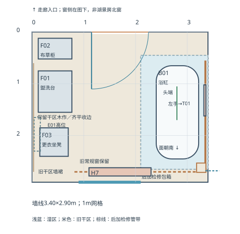
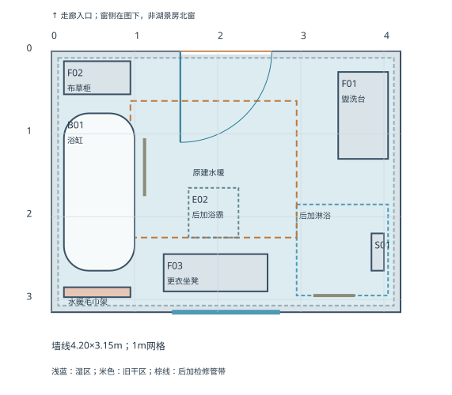

罗辑浴室布局俯视图

普通房间→1890年代装热水与浴缸→局部湿区换基层，保留干区木作→暖季补热。
两图显示现状与沿革痕迹，不是同一房间的新旧版本。罗辑浴室不是复古主题新浴室；老人浴室不是后来才从客房改出来的。

普通房间→1890年代装热水与浴缸→局部湿区换基层，保留干区木作→暖季补热。

1890年代原建固定浴缸/热水/排水/水暖→后加淋浴与扶手→后加浴霸模块。
初始房间具体名称、设备型号与施工构造待定；正文不改，历史痕迹不以牺牲防水、排水和使用条件实现。